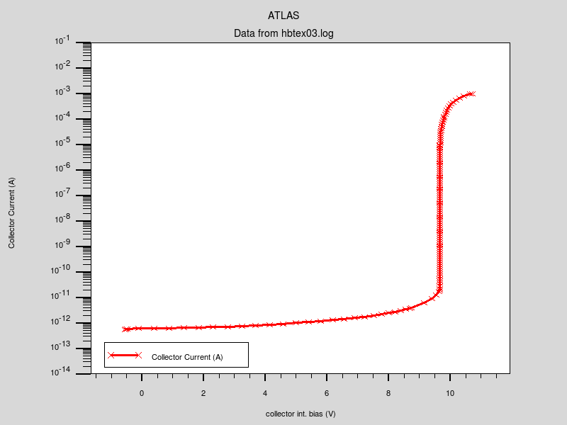
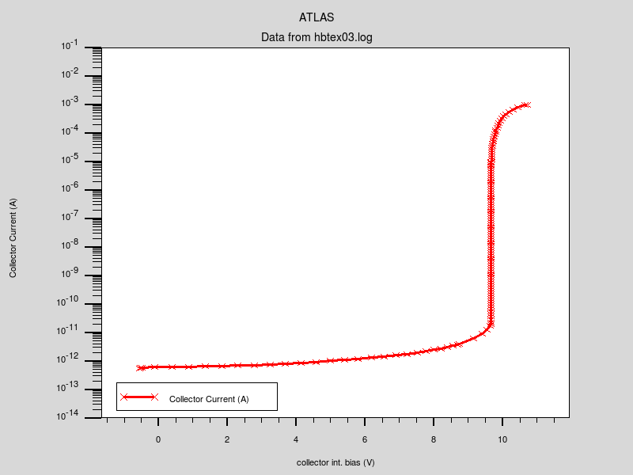
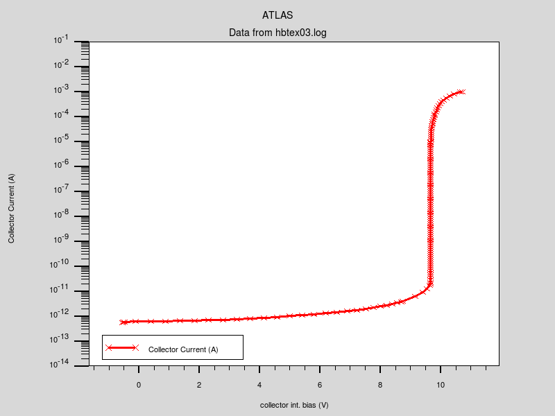

| Requires: | Blaze |
| Minimum Versions: | Atlas 5.26.1.R |

This example demonstrates avalanche breakdown in an AlGaAs/GaAs HBT with an abrupt heterojunction. It shows:
The structure specification part of this example is similar to the previous example. The major difference is that this HBT as an abrupt AlGaAs/GaAs heterojunction as opposed to the graded composition fraction used before. Specifying an abrupt junction is simple. No grad.* parameters are used and the value of x.comp on the region statement is taken as the composition fraction throughout the AlGaAs region right up to the GaAs region.
The models and material parameters are set exactly as in the previous example. The only addition is the impact ionization model specified by impact selb. Impact ionization parameters for ternary compounds such as AlGaAs are not well defined and their dependence on composition fraction is known even less. Tuning of the parameters of the impact statement might be needed to match experimental results.
The contact statement is used to specify a high value resistor at the collector electrode. This provides for a smooth transition from voltage boundary conditions to current boundary conditions during the ramping of external collector voltage. Note that such kind of simulation could be performed using the curve tracing algorithm, providing automatic selection of the loaded resistor.
The emitter voltage is ramped to -1.1V. Then, holding the emitter voltage constant, the external collector voltage is ramped to 1.e9 V. Due to the high value resistor, the value seen on the semiconductor-to-collector contact will, of course, not increase to such high levels.
The results of simulation are then displayed using TonyPlot. The x-axis of the Ic/Vcb curve should be set to collector int. bias. This is the collector voltage on the semiconductor contact as opposed to the applied voltage across the resistor.
To load and run this example, select the Load button in DeckBuild > Examples. This will copy the input file and any support files to your current working directory. Select the Run button in DeckBuild to execute the example.